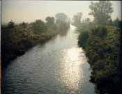

|
|
|
 An der Gera bei Elxleben
Elxleben - Gipswerk
|
an der Unstrut
In einer Legende aus der Zeit Karls des Großen (747 - 814) wird Elxlebenzum ersten Mal erwähnt. Im Zusammenhang mit der Unterwerfung der Wenden geht es um die Aufteilung Thüringens: "Der Kaiser Karl war also gar sehr bedacht auf der Lande Gebrechen.... darum ward das Land am Viere (d.h. Thüringen in vier Striche) geteilt. Von der Werra bis zur Saalevon dem fränkischen Wald bis an den Harz.... der andere Strich hebt sich an auf der bloßen Loibe (Thüringer Wald) als da die Gera entspringet und fließet gegen Tal für Erfurth, vor Kühnhausen, vor Ebbesschleben (Elxleben), vor Walschleben, vor Rinkleben, vor Gebesee gegen Strussforte."Auch bei der Gründung des Erzbistums Magdeburg wird Elxleben erwähnt sowie in alten Urkunden als zur Stadt Erfurt gehörendes Dorf. Am 22.Oktober 973 fielen u.a. alle Kirchengüter und Rechte der Dörfer Elxleben, Walschleben, Münstergehofen und Dachwig bei einem Tausch zwischen dem Erzbischof von Magdeburg und dem Abt Werner von Fulda an die Abtei Fulda. 1369 kaufte der Rat der Stadt Erfurt von den Grafen Heinrich und Ernst von Gleichen die Dörfer an der Gera: Walschleben, Münstergehofen und Elxleben mit den Gerichten. In den nächsten 30 Jahren kaufte Erfurt dem Klosterhof Orphal alle Anteile und Rechte von Elxleben ab. 1525 tobte auch in Erfurt und seiner Umgebung der Bauernkrieg, in dessen Verlauf die Bauern der Dörfer um Erfurt die freie Nutzung von Wald, Wegen und Weiden sowie Abgabefreiheiten erkämpften. Nach der Schlacht bei Frankenhausen wurden diese Rechte wieder aufgehoben und die Bauern bestraft. 1576 wurde die alte St. Johanneskirche abgerissen, um an deren Stelle die jetzige St. Michaeliskirche im spätgotischen Stil zu erbauen. Am 2.8.1578 wurde das Richtfest des Turmes gefeiert. Bei der Gelegenheit wurde der Turm vom Kopf bis zum Erdboden vermessen, was 15,5 Ruten ergab. In den Jahren 1596 - 99 wüteten in Elxleben die Blattern, an denen 551 Menschen starben. Während des Dreißigjährigen Krieges (1618 - 1648) reduzierte die Pest die Einwohnerzahl von ursprünglich 1200 auf nur noch 200 Personen. Außerdem wurden 160 der 240 Häuser zerstört. 1622 zog der Herzog von Altenburg mit seinem Heer in Richtung Niederlande undwütete derartig, daß es zu einer regelrechten Aufruhr unter den Bauern kam. Viele Soldaten wurden erschlagen, jedoch wurden noch mehr Bauern erschossen - was ein Chronist folgendermaßen festhielt: "Den 29. Dezember 1622 sind zu Kühnhausen erschossen worden Elxlebische an der Zahl 36, dabei ein Knabe von 10 Jahren." 1635 wurde Elxleben erneut von den Blattern und der Pest heimgesucht, woran 405 Menschen starben. 1663 begann der Kurfürst von Mainz Krieg gegen Erfurt. 1664 musste Erfurt sich den Truppen des Kurfürsten ergeben, das gesamte Gebiet mit seinen Dörfern und somit auch Elxleben wurde kurmainzisch. Am 3.5.1668, so kann man der Chronik entnehmen, brannte es in Elxleben: "Während des Gottesdienstes brach bei der Schenken ein Feuer aus, wo selbst 14 Häuser und Ställe verbrannten. Dasselbe kam von Sömmerings Scheuer aus und war angelegt. Es verbrannten dem Zacharias Mangold etliche Pferde, Schweine und anderes Vieh, viel Geld und sonderlich auch sein schwangeres Weib." Bei einer neuerlichen Pestepidemie starben im Jahr 1683 in Elxleben 485 Personen. 1690 gestand der Erzbischof von Mainz den Elxlebern das Braurecht zu. Bis 1947 befand sich das Brauhaus hinter der neuen Schule und der Gaststätte Taubert. 1715 muß in Elxleben eine große Überschwemmung gewesen sein. Aus der Chronik: "Es ist ein großes Gewässer gewesen und hat das Schafvieh dabei verderben wollen und die große Gerabrücke zerrissen. Da haben die Schafe von den Wiesen heim mit Wagen geholt werden müssen. Während des siebenjährigen Krieges (1756 - 1763) wurde Erfurt siebenmal von der preußischen Armee und von der Reichsarmee besetzt, worunter auch die umliegenden Dörfer zu leiden hatten. Am Ende des Krieges mußte Elxleben 8694 Taler Kriegsschulden zahlen. 1791 lebten in Elxleben 770 Einwohner, davon: 165 Männer, 154 Frauen, 37 Witwen und Witwer, 175 Söhne, 187Töchter, 8 Knechte, 7 Mägde, 14 Meister, 2 Gesellen, 1 Lehrjunge. Am 4.8.1807 wurde Erfurt mit seinem Landbesitz per Dekret zu einem Bestandteil des französischen Staates gemacht. Die Abgaben wurden dadurch nicht geringer. Infolge einer Missernte 1806 und der Plünderungen durch die Soldaten litt die Bevölkerung Hunger. Die jungen Männer mussten für Napoleon in die Schlacht ziehen. Nach der Völkerschlacht bei Leipzig zogen französische Truppen durch das Gebiet Erfurt und verwandelten die Dörfer in große Lazarette. Bis 1815 mussten sie verpflegt werden; erst nach der Verbannung Napoleons nach St. Helena trat Frieden ein. Erfurt fiel wieder in preußischen Besitz zurück und wurde zu einer unbedeutenden Provinzstadt 1895 - 1897 wurde die Eisenbahnstrecke von Kühnhausen nach Döllstädt gebaut, 1897/98 das Plattenwerk errichtet. 1902 begann der Schulneubau Thomas-Müntzer-Straße. 1906 wurde der Bau einer Wasserleitung erforderlich, und 1912 begann der Bau einer elektrischen Anlage. 1914 wurden die einzelnen Häuser an das Stromnetz angeschlossen. 1920 wurde der erste KONSUM (Volkskraft) eröffnet.
|